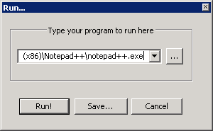

Commands allow you to execute applications from Notepad++, for example to open your current file in a browser or compile it with some external compiler. You can pass the program command line parameters based on the current status of your document.

Sselect . A dialog will pop up asking for the path to the program and possible any command line parameters. You can use the browse button to search for your program. The drop down list provides recently run programs. The command line arguments can also be based on the status of the current document, and are always enclosed in $(...), where … can be:
For example,
| "$(NPP_DIRECTORY)\notepad++.exe" -multiInst "$(FULL_CURRENT_PATH)" |
would start a new instance of Notepad++ opening the current file. Remember to put quotes around paths if it can contain spaces. For the Notepad++ command line options, see Command Line.
Select it from the Run menu below the option. If no commands are saved, the list will be empty.
Sselect , enter the command and press . A dialog will pop up asking for a name of the command and the default key combination. These can later be changed (and deleted) using the Shortcut Mapper (see Shortcut Mapper). When saved the command will be available from the Run menu.